An Unconventional Juan de Fuca Trip
June 22, 2023
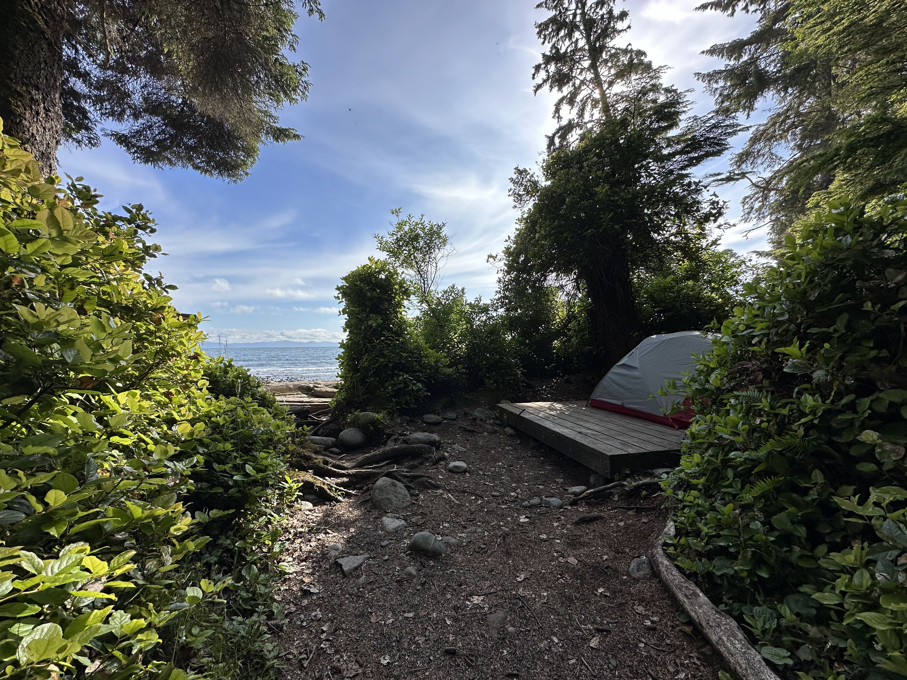
Our tent setup at West Sombrio.
The Juan de Fuca (JDF) trail follows the coast line on Vancouver Island from China Beach to Botanical Beach, right across the water from Olympic National Park. It's a 47km trail that's typically completed in 3-4 days, but we chose to only do half of the trail and spent more time relaxing on the beaches instead! The JDF is also commonly compared to the West Coast Trail with very similar views and terrain but at a much lower cost and no reservation system.
Vancouver - Payzant Creek
Day 1
We live in Vancouver and took the 8AM ferry from Tsawassen to Swartz Bay. Since it was a weekend, we made reservations ahead of time to avoid any delays. We ate breakfast at the Starbucks at the ferry terminal and then boarded the ferry to Swartz Bay. Once we arrived on the island, we drove straight to Port Renfrew so we would have enough time to explore and comfortably make it to our first campsite. The drive from Swartz Bay took under 3 hours and we arrived in Port Renfrew around lunch time. The drive was very scenic and there weren't many cars on the road. Some parts of the road does get quite bumpy and there are also a few one way bridges to cross, but overall it was a very easy drive.
We parked our car with a local in Port Renfrew because we heard there are a lot of break-ins that happen along the JDF overnight parking lots, sometimes completely damaging cars with drilled gas tanks, stolen catalytic converters, or just pushed into the ditch. Even though this doesn't happen very often, it was repeated enough to make the news in summer 2022 and we didn't want to risk it. We paid $20 a day for parking and it was worthwhile for us for the peace of mind.
We parked very close to where the trailbus stops, which means we had to walk the 3km from Port Renfrew to the start of the Juan de Fuca trail at Botanical Beach. There's very little information about this stretch of the trail online, but it really is just a walk along the road. There's a very small shoulder to walk on but we mostly walked on the road since it wasn't very busy. We did encounter a few hikers on their way out as well.
Payzant Creek
Our first stop was Payzant Creek, which is the first campsite from the start at Botanical Beach. We contemplated going farther, but it was getting close to dinner time and we decided to just stop for the day since we did also spend a lot of time travelling and walked the 3km in from Port Renfrew. There were maybe a dozen tent platforms at Payzant Creek and when we arrived, only a few were occupied. The sites are very isolated at Payzant Creek and we thought we were alone at first, before walking around the entire campsite and spotting the others. Everything was very convenient at the campsites, with fresh water from Payzant Creek just a few steps away, a food cache, and a very clean (and stocked) outhouse.
 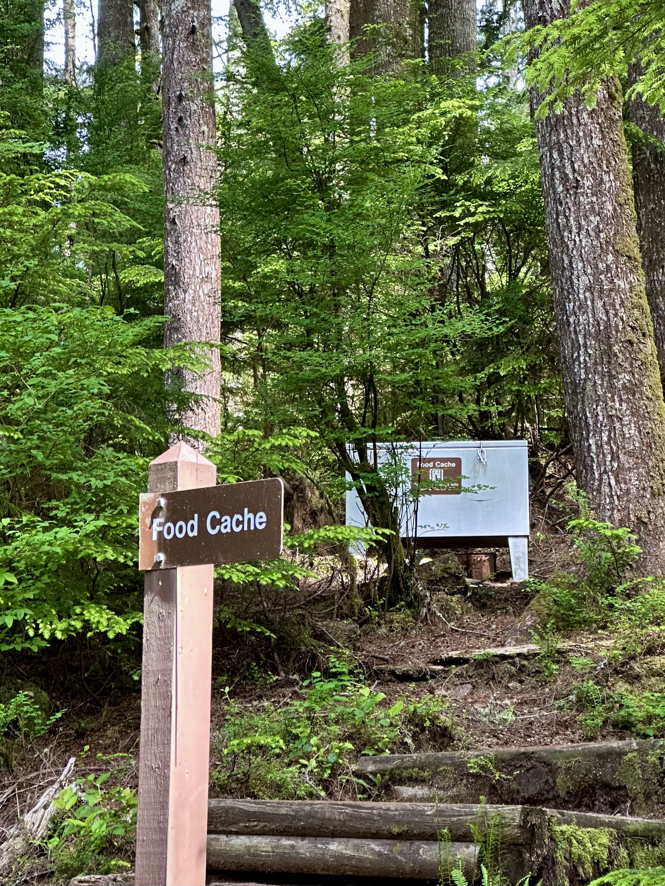
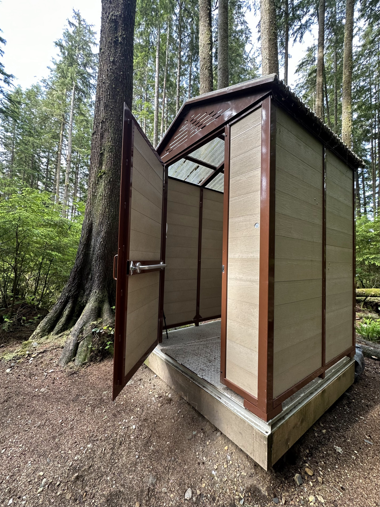
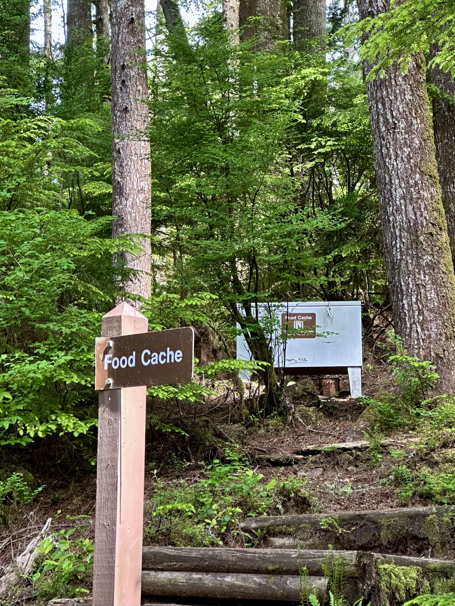
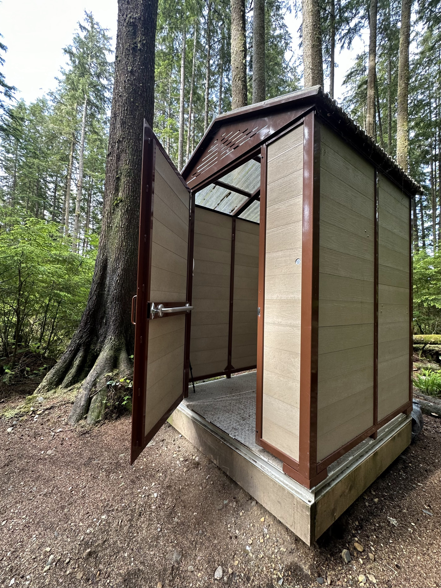
We set up our tent for the night and cooked our dinner, then went to bed very early because I was exhausted from a very hectic week leading up to our trip. There was also just not much to do or see at Payzant Creek since there was no beach access and the trees block most of the sky anyway. Overall, it was a very quiet night.

Payzant Creek - Sombrio Beach
We parked our car with a local in Port Renfrew because we heard there are a lot of break-ins that happen along the JDF overnight parking lots, sometimes completely damaging cars with drilled gas tanks, stolen catalytic converters, or just pushed into the ditch. Even though this doesn't happen very often, it was repeated enough to make the news in summer 2022 and we didn't want to risk it. We paid $20 a day for parking and it was worthwhile for us for the peace of mind.
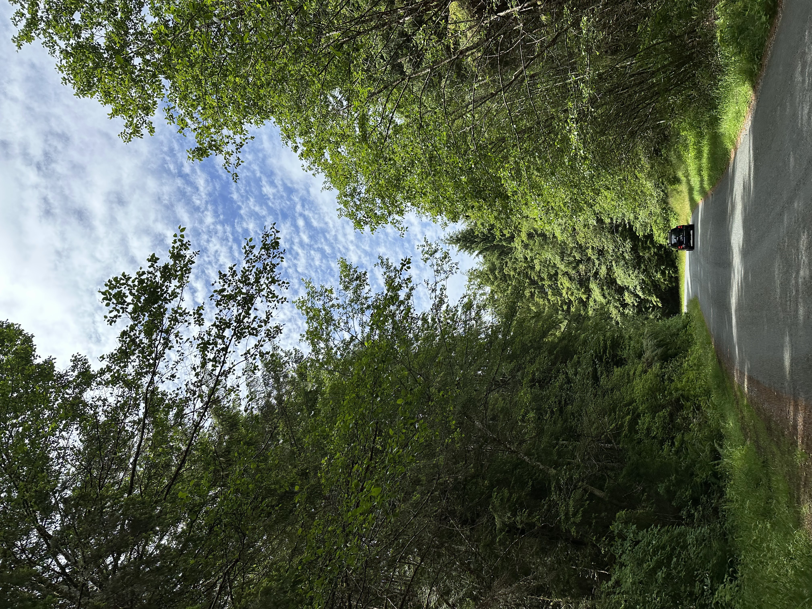
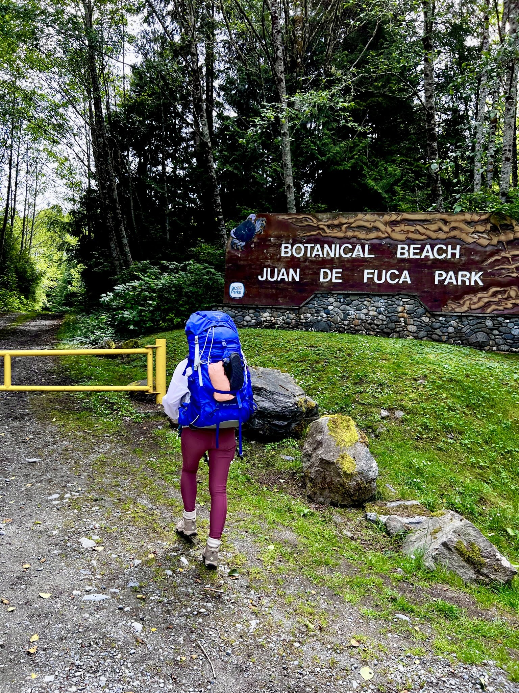
Walking from Port Renfrew to Botanical Beach.
We parked very close to where the trailbus stops, which means we had to walk the 3km from Port Renfrew to the start of the Juan de Fuca trail at Botanical Beach. There's very little information about this stretch of the trail online, but it really is just a walk along the road. There's a very small shoulder to walk on but we mostly walked on the road since it wasn't very busy. We did encounter a few hikers on their way out as well.
Payzant Creek
Our first stop was Payzant Creek, which is the first campsite from the start at Botanical Beach. We contemplated going farther, but it was getting close to dinner time and we decided to just stop for the day since we did also spend a lot of time travelling and walked the 3km in from Port Renfrew. There were maybe a dozen tent platforms at Payzant Creek and when we arrived, only a few were occupied. The sites are very isolated at Payzant Creek and we thought we were alone at first, before walking around the entire campsite and spotting the others. Everything was very convenient at the campsites, with fresh water from Payzant Creek just a few steps away, a food cache, and a very clean (and stocked) outhouse.
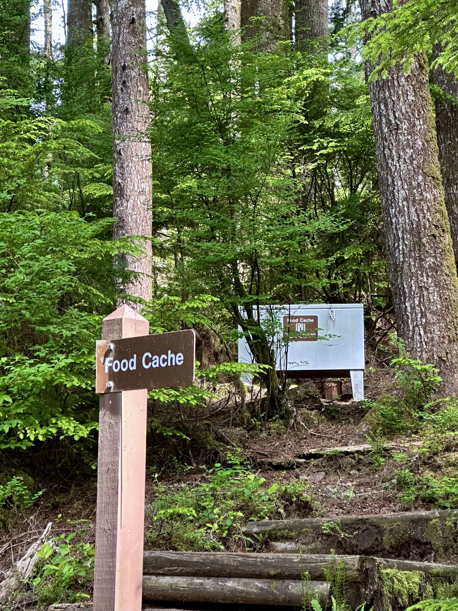
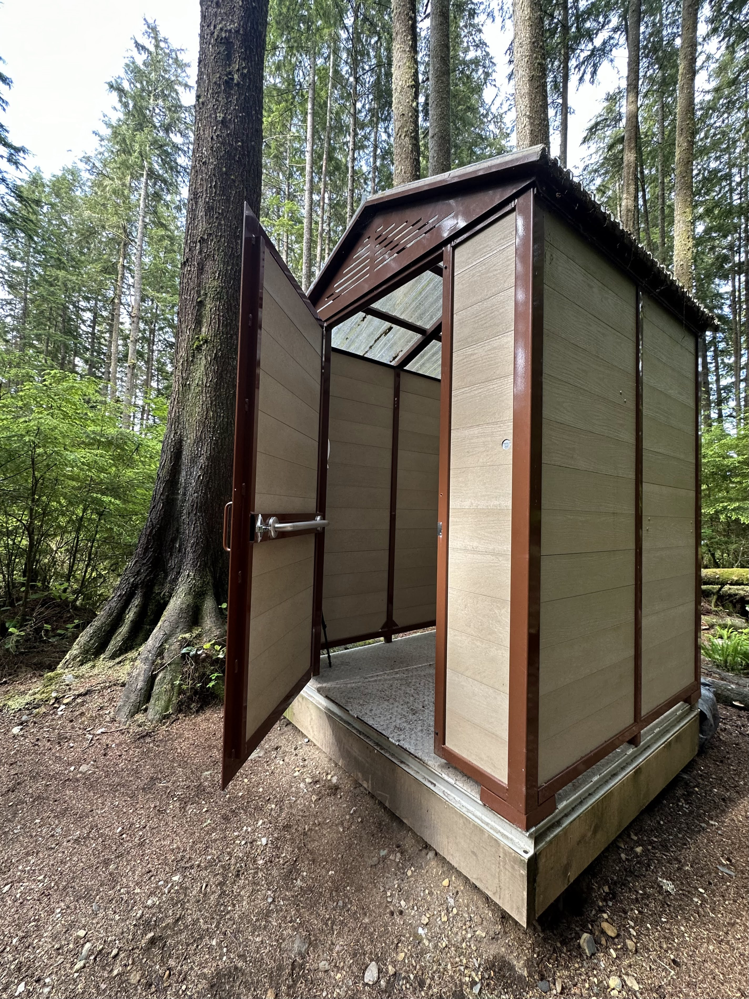
Some amenities at Payzant Creek
We set up our tent for the night and cooked our dinner, then went to bed very early because I was exhausted from a very hectic week leading up to our trip. There was also just not much to do or see at Payzant Creek since there was no beach access and the trees block most of the sky anyway. Overall, it was a very quiet night.
Our tent at Payzant Creek.
Day 2
We were in no rush since our schedule was very flexible and we only needed to get to Sombrio Beach. Although we considered the option of going past Sombrio to Chin Beach, then heading back to Sombrio to take the trailbus out, we ultimately decided against it. We woke up around 8AM and had a leisurely breakfast before packing up and heading out.
Day 2 was our longest hiking day, which was still relatively short. We passed by Parkinson Creek first, and then stopped at Little Kuitshe Creek for lunch. The campsites at Little Kuitshe Creek were less private than Payzant Creek, but did have an access to the beach. We didn't have time to check it out and just continued towards Sombrio Beach. The trail is in vastly varying conditions, ranging from brand new wooden platforms to just a muddy mess. There were many fallen trees and completely overgrown sections. At one point, we also had to pass a tree that was creaking with every gust of wind and we were worried it would fall on us. We also encountered very few people on the trail, which was both serene and a little bit unsettling. Luckily, there is cellular service along almost the entire trail now, so I felt much more at ease.
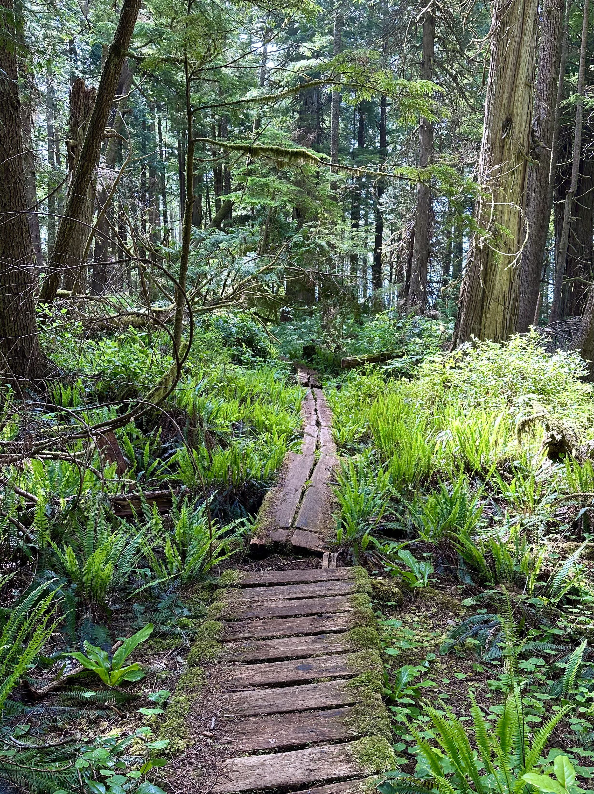
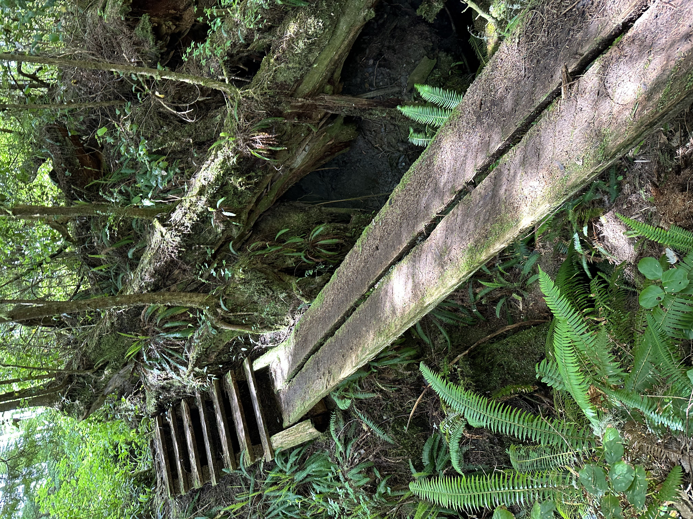

The Juan de Fuca trail.
The trail is currently still undergoing renovations funded by BC Parks. It's part of a multi-million dollar project and had parts of the trail closed earlier in the year. We thought that since everything was open that the upgrades were complete, but we were very wrong. Most of the section from Little Kuitshe Creek to Sombrio Beach was still under construction and all of the materials were just left on the trail. This actually made the trail more difficult to navigate because we had to climb over and around wooden planks and other construction material. I am looking forward to seeing the completed trail in the future though!


Trail upgrades in progress.
There were also a lot of pretty views along the trail as we got closer to Sombrio Beach and the trail was closer to the ocean. Towards the end was when we finally started to hike on the rocky beaches and there were a lot of people around on day trips around Sombrio Beach. There were also a lot of surfers and one of the groups was very helpful in directing us back towards to trail to the campsite. Although there are supposed to be buoys indicating entrances back to the main trail from the beach, we noticed that they seem to be missing near Sombrio Beach. We were exhausted from the day once we reached Sombrio and decided not to venture any further. We were also very bored from how repetitive the trail was and didn't want to do any more hiking.
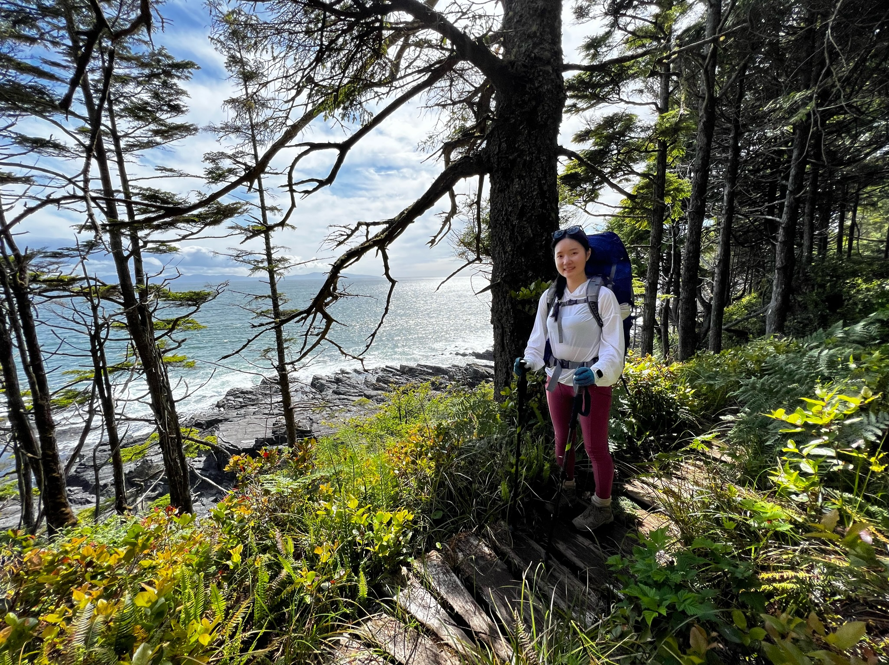
Pretty views along the trail.
There were only a few tent platforms at Sombrio Beach, all on the west side. There were only two left when we arrived, but it's very easy to find a spot to set up on the beaches. We were too tired to scope out the area with our packs, so we just settled for a tent platform that was close to the beach. The campsite at Sombrio Beach was also quite convenient for getting fresh water from the stream and was also equipped with the same food storage and outhouse as the other campsites on the trail.
After setting up our tent and eating dinner, we went around and explored the beach. There were a lot more day-use people on the east side of Sombrio and some people camping overnight that were clearly not backpackers. Overall, Sombrio is a lot more lively than the other spots on the JDF trail. We ended the day by watching the sunset on the beach.
Sombrio Beach
Day 3
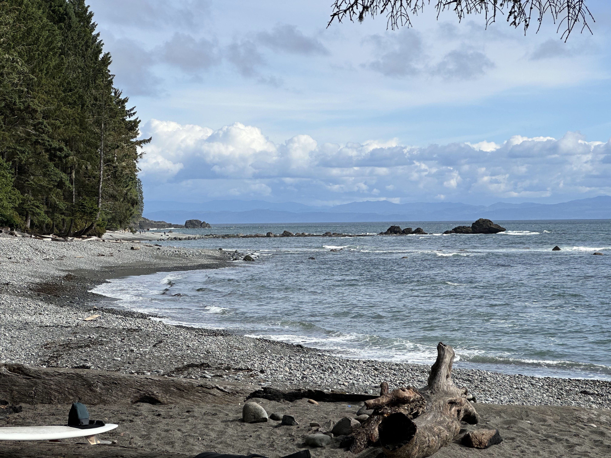
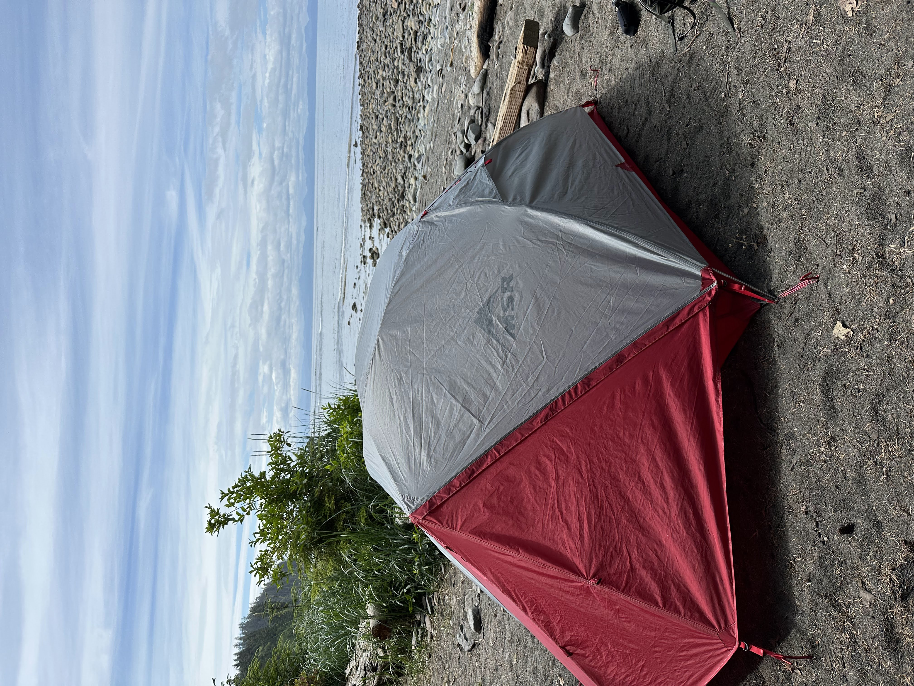
Camping on the beach at Sombrio.
We only hiked with our packs for a few hundred meters on Day 3 to move our setup from West Sombrio to East Sombrio so we can camp on the beach and truly experience the JDF trail. We scoped out a nice spot the day before and headed straight for it after having breakfast. We made sure to find a spot that had a view of the ocean but was also far enough that we could be certain that high tides wouldn't reach us. We heard from others how important this is because the waves are very loud at night and it's very hard to sleep if you're worried about getting washed away.
We ran into the park ranger while moving our tent and he was very friendly. He checked our permits and sent us on our way. He pointed out that the remainder of the trail is just as repetitive as the first half so we were very happy with our decision to stay at Sombrio Beach for the rest of our trip.
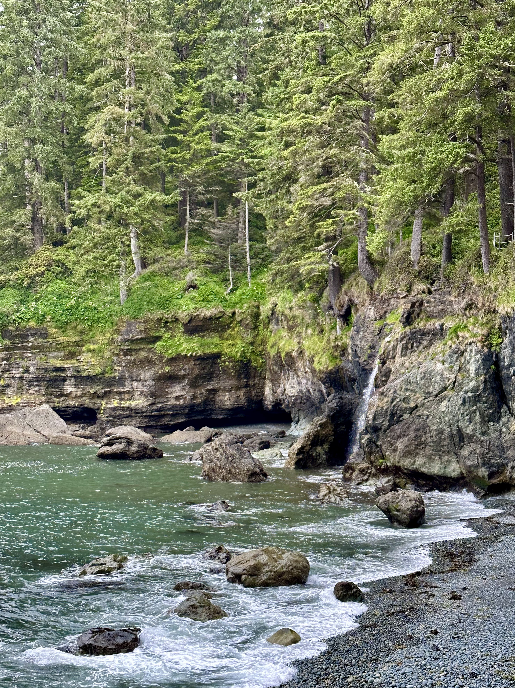
Waterfall near Sombrio Beach.
We spent the day doing day hikes at Sombrio, visiting the two frequented waterfalls nearby. Although it was a weekday, there were still many tourists heading for the hidden waterfall and we essentially had to line up to take pictures with it. It was a very cool experience but it's definitely not a hidden gem anymore. We also hiked a bit further on the JDF to get to the other coastal waterfall. This one was way less crowded and we were able to enjoy it for a while and eat some snacks before heading back to our campsite. It was pretty early in the day when we got back, but the weather was starting to turn. It started raining right after we finished our lunch, so we spent the rest of the day in our tent.
Sombrio Beach - Vancouver
Day 4
We woke up bright and early on Day 4 in order to catch the trailbus back to Port Renfrew. The bus stops on the main road so we had to hike a few kilometers out. The road out from Sombrio is a FSR and easy to walk on. Since it was early in the morning, we didn't encounter any hikers or vehicles the whole way. Even when we arrived at the main road, it was very quiet and there were almost no cars.
We arrived 20 minutes early for the bus because we were worried about missing it since it only comes once a day. We also weren't sure how to wait for the bus since there is no designated bus stop. However, since there were no cars on the road, we knew the bus driver wouldn't miss us. The bus was around 10 minutes late which also made us a bit nervous, but it did eventually arrive. The bus driver was very friendly and super efficient at loading all our gear onto the bus. The bus was mostly filled with hikers on their way to the West Coast Trail but there were a couple of people on their way to start the JDF trail as well. It took around 30 minutes to get back to Port Renfrew and we were dropped off at the same spot where we parked our car.
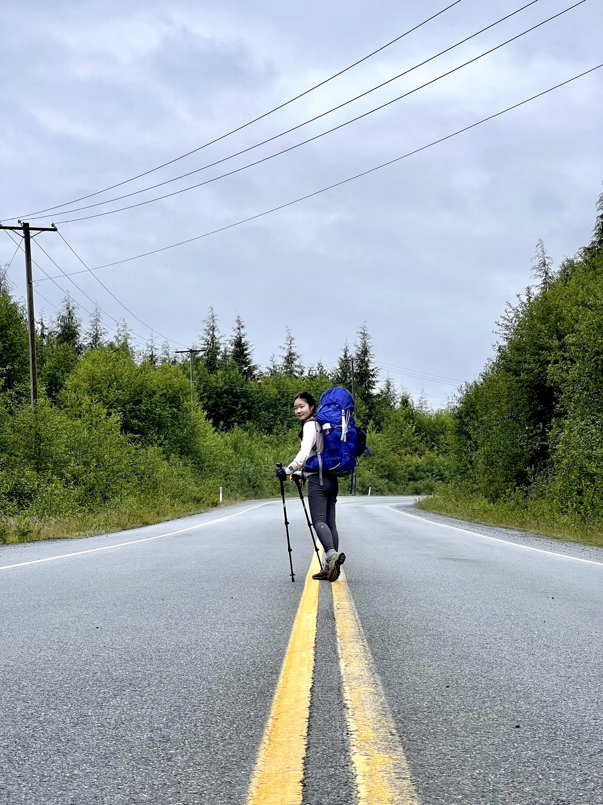
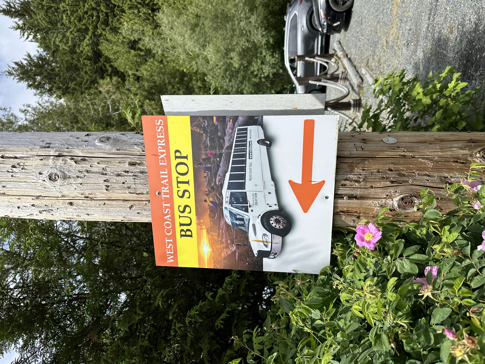
Catching the West Coast Trail Bus from Sombrio.
Once in Port Renfrew, we stopped to grab some coffee before heading out. There is almost nothing open in Port Renfrew on weekday mornings, which was slightly disappointing. So, we only grabbed coffee and then drove out towards China Beach. Since we didn't complete the entire JDF trail, we still wanted to see the Mystic Beach waterfall, so we parked at the China Beach parking lot and hiked down to Mystic Beach. This way we got to see all the sights we wanted to without having the hike the "most difficult" section of the trail.
Afterwards, we drove back to Victoria where we had lunch, and headed to the ferry terminal. We made reservations on a later ferry but realized we just wanted to go home. Luckily, BC Ferries allows you to exchange your reservation for an earlier ferry on the same day for free if there is space so everything worked out :)
Packing List
- Camping basics, including a tent, sleeping pad, and sleeping bag, is an obvious necessity. We did also see some hammocks set up at the beach, so that's a fun option too. More importantly, make sure to bring a tarp because the weather is very unpredictable and it's nice to have a dry shelter.
- For the same reason, bring a rain jacket and sunscreen to be prepared for all weather. A down jacket is also super helpful for early mornings and evenings because it does get very cold by the ocean.
- Proper hiking boots are absolutely necessary for this trail. Other helpful items are hiking poles and gaiters for the mud and sand. We didn't bring any gaiters but I can definitely see why they would be nice to have. We did also bring sandals to change into at the campsite to get a break from the hiking boots.
- Gas, stove, pot, and utensils are important for meals, especially lightweight options since you do have to carry it will you. We used paper towels to clean everything and remember to bring garbage bags since you do have to pack everything out.
- There are water sources all along the trail, but you definitely need a water filter to be safe.
- We found that bringing a camp chair wasn't necessary, especially since they occupy more space and weight. Instead, we brought our Therm-a-rest seat pads with us which were absolutely perfect because they also insulate us from the cold and damp surfaces.
- A headlamp is useful at night time. We always went to bed before it was dark, so we didn't actually end up using it at all on this trip.
- Toiletries. Four days on the trail is a long time to go without showers, so I find it important to bring cleansing wipes and dry shampoo as well.
- Portable charger and all the necessary charging cables are important, especially now that there is actually reception on the trail.
- Also, don't forget the 10 essentials!